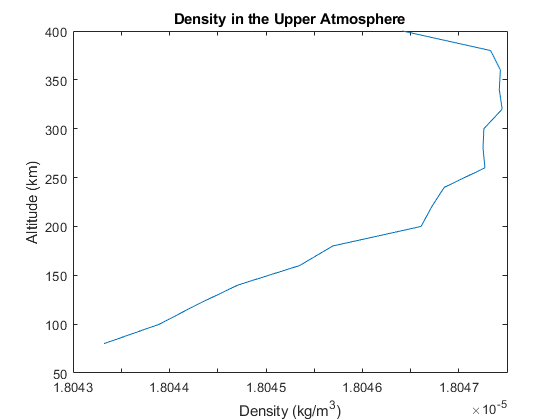
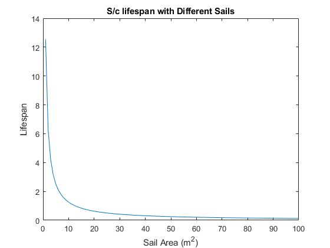

Contents
Midterm 1
Spacecraft Environments Liam Hood
function Midterm1Q2()
clc; clear; close all; AtmosphericTable = [ 80 0.021999025 0.024571135 3.22009E-20 4.11549E-20 ; ... 100 0.021546553 0.024570958 3.06282E-20 4.1155E-20 ; ... 120 0.020572841 0.024107455 2.72417E-20 3.95418E-20 ; ... 140 0.020151824 0.024107237 2.57837E-20 3.95419E-20 ; ... 160 0.02086041 0.025089884 2.82738E-20 4.29638E-20 ; ... 180 0.020421949 0.025089881 2.67765E-20 4.29638E-20 ; ... 200 0.022634086 0.026635973 3.4598E-20 4.83512E-20 ; ... 220 0.021613262 0.025956358 3.11248E-20 4.59902E-20 ; ... 240 0.021135058 0.025173841 2.95466E-20 4.32741E-20 ; ... 260 0.021875748 0.025149913 3.2131E-20 4.31986E-20 ; ... 280 0.020375056 0.024860903 2.70977E-20 4.22018E-20; ... 300 0.018972346 0.024833729 2.24304E-20 4.21212E-20; ... 320 0.018104496 0.02542809 1.97679E-20 4.42149E-20; ... 340 0.017154812 0.025014337 1.70363E-20 4.27978E-20; ... 360 0.016438595 0.024711836 1.60011E-20 4.17767E-20; ... 380 0.01553743 0.024121928 1.40283E-20 3.97589E-20; ... 400 0.014143682 0.02359261 1.3322E-20 3.79628E-20; ... 420 0.01066863 0.022535034 1.24689E-20 3.43184E-20; ... 440 0.007258539 0.021449041 1.06353E-20 3.05727E-20; ... 460 0.00432235 0.020404336 9.03802E-21 2.69659E-20; ... 480 0.00351503 0.019459819 8.28983E-21 2.37016E-20; ... 500 0.003010642 0.018651911 7.961E-21 2.09065E-20; ... 520 0.002177618 0.018116948 7.74687E-21 1.90794E-20; ... 540 0.001817642 0.017637395 7.79726E-21 1.74364E-20; ... 560 0.001737794 0.017266981 8.04958E-21 1.61774E-20; ... 580 0.001645458 0.017042738 8.47109E-21 1.54638E-20; ... 600 0.001588727 0.016836129 9.20218E-21 1.48111E-20 ] ; AODensity = [ 200 1.00E+16 1.00E+16 ; ... 220 6.00E+15 8.00E+15;... 240 3.00E+15 6.00E+15;... 260 1.00E+15 4.00E+15;... 280 7.00E+14 3.00E+15;... 300 5.00E+14 2.00E+15;... 320 3.00E+14 1.00E+15;... 340 2.00E+14 8.00E+14;... 360 1.00E+14 6.00E+14;... 380 7.00E+13 5.00E+14;... 400 3.00E+13 4.00E+14;... 420 8.00E+12 3.80E+14;... 440 3.00E+12 3.60E+14;... 460 1.00E+12 3.40E+14;... 480 7.00E+11 3.20E+14;... 500 5.00E+11 3.00E+14;... 520 2.00E+11 2.60E+14;... 540 9.00E+10 2.30E+14;... 560 6.00E+10 2.00E+14;... 580 3.00E+10 1.60E+14;... 600 1.00E+10 1.30E+14 ] ; g = 9.81 ; % m*s^-2 R = 287 ; % J*mol^-1*K^-1 kB = 138e-23 ; % J/K Na = 6.0221409e23 ; % avogadro's number mu = 398600 ; re = 6378 ; h = AtmosphericTable( 1:17 , 1 ) ; Mmin = AtmosphericTable( 1:17 , 2 ) ; Mmax = AtmosphericTable( 1:17 , 3 ) ; Mavg = ( Mmin + Mmax ) ./ 2 ;
2
p = rho*R*T a
n = 1e2 ; p0 = 1 ; % avg pressure [Pa] at 80km T0 = 273.15 - 80 ; %avg temp [K] at 80 km L = 3 ; % [K/km] p = p0.*( 1 + (L/T0).*h ).^((Mavg.*g)./(R.*L)) ; T = T0 + L/h ; for ii = 1:length(h) rho(ii) = p(ii)/(R*T(ii)) ; end figure plot( rho , h ) title( 'Density in the Upper Atmosphere' ) xlabel( 'Density (kg/m^3)' ) ylabel( 'Altitude (km)' ) % b a = 400 + re ; m = 80 ; A = 1 ; Cd = 2.2 ; time = 0 ; ii = 1 ; while a(ii) > ( 80 + re ) adot(ii) = -((rho(ii)*A*Cd)/m)*((mu*a(ii))^.5)*(1e3) ; Life(ii) = -20/adot(ii) ; time(ii+1) = sum(Life) ; a(ii+1) = a(ii) - 20 ; ii = ii + 1 ; end disp([ 'The time to de-orbit is ' , num2str(time(ii)) ]) % c m = 80 ; A = linspace( 1 , 100 , 100 ); Cd = 2.2 ; time = 0 ; for jj = 1:100 a = 400 + re ; ii = 1 ; while a(ii) > ( 80 + re ) adot(ii,jj) = -((rho(ii)*A(jj)*Cd)/m)*((mu*a(ii))^.5)*(1e3) ; Life(ii) = -20/adot(ii,jj) ; time(jj) = sum(Life) ; a(ii+1) = a(ii) - 20 ; ii = ii + 1 ; end end figure plot( A , time ) title( 'S/c lifespan with Different Sails' ) xlabel( 'Sail Area (m^2)' ) ylabel( 'Lifespan' )
The time to de-orbit is 12.5459 
end